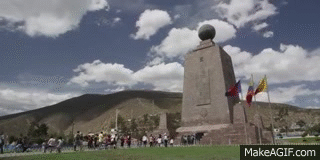

Quito
Uno de los lugares turísticos de Ecuador que genera mayor
curiosidad por su supuesta posición en la mitad del mundo,
lugar donde se levantó un monumento piramidal de 30 metros
de altura que señalaría la división exacta entre el hemisferio norte y sur.
Mitad del mundo
Aún cuando hoy se sabe gracias a la tecnología GPS que el
centro preciso estaría 240 metros más al sur, sigue siendo
un imperdible la foto en el monumento. Otros atractivos son el Museo
Antropológico y Etnográfico ubicado al interior de la estructura y la
pequeña ciudad que la rodea, construida a modo de réplica de una ciudad colonial española.
En la Mitad del Mundo en Quito se construyó un obelisco y
un complejo monumental alusivos a la línea equinoccial,
se levantan tesoros del arte, la arquitectura y la ciencia, en medio de paisajes que confrontan
el verdor de la naturaleza y los matices de la modernidad. El monumento está coronado por una esfera
metálica que representa a la Tierra.
El Ecuador terrestre es una línea imaginaria que divide al Planeta Tierra en dos hemisferios iguales,
uno al Norte y otro al Sur.
Horario de atención
Lunes a domingo: 09:00 a 18:00
Todos los sábados y domingos hay eventos culturales.
